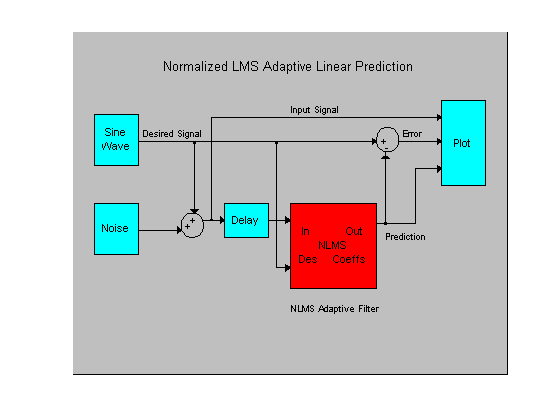
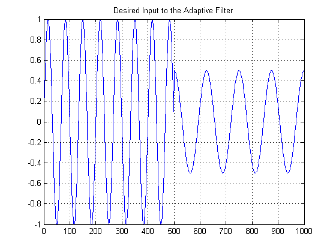
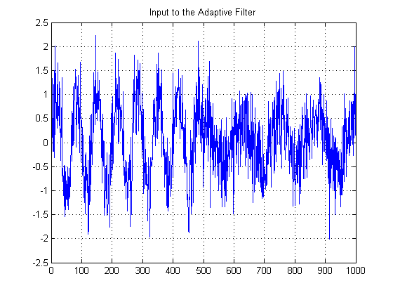
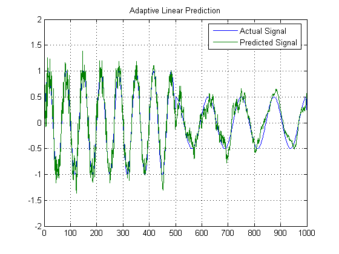
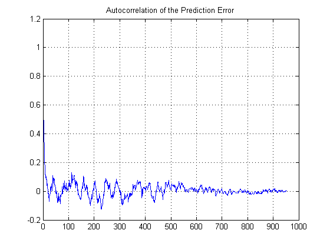

This demo casts the normalized least mean squares adaptive filter in a linear prediction framework. The current sample of a noise corrupted sine wave is predicted using 32 past samples, i.e., a 32nd order normalized LMS adaptive filter is applied to the data.
Note: This demo is equivalent to the Simulink model 'lmsadlp' provided in the Signal Processing Blockset.
Reference: S. Haykin, "Adaptive Filter Theory", 3rd Edition, Prentice Hall, N.J., 1996.
The model shows a normalized least mean squares adaptive filter in a linear prediction framework.
priv_drawnlmsdemo;
axis off
 The desired signal is a sine wave of 0.015 cycles/sample and a cosine of 0.008 cycles/sample.
N = 500;
sig = [sin(2*pi*0.015*[0:N-1]) 0.5*cos(2*pi*0.008*[0:N-1])];
plot(0:2*N-1,sig); grid;
title('Desired Input to the Adaptive Filter');
 The input to the adaptive filter is a delayed version of the desired signal corrupted by white noise of variance 0.5.
nvar = 0.5; % Noise variance noise = nvar*randn(1,2*N); % Noise n = sig + noise; % The noise corrupted sine wave. x = [0 n]; % Delayed input for linear prediction d = [sig 0]; % Desired signal to the adaptive filter M = 32; % NLMS adaptive filter order mu = 0.2; % Normalized LMS step size. plot(0:2*N,x); grid; title('Input to the Adaptive Filter');
Create and use the Normalized LMS adaptive filter object of length M, step size 0.2 and offset 1e-6
Hadapt = adaptfilt.nlms(M,mu,1,1e-6); [y,e] = filter(Hadapt,x,d); cla; plot(0:1000,[d' y']); grid on; axis([0 1000 -2 2]); title('Adaptive Linear Prediction'); legend('Actual Signal','Predicted Signal');
The autocorrelation of the prediction error shows that the input is white noise.
X = xcorr(e(50:end),'coeff'); [maxX idx] = max(X); plot(X(idx:end)); grid; title('Autocorrelation of the Prediction Error');